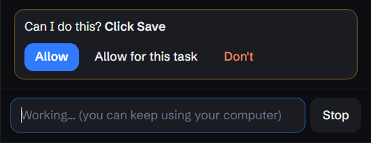

Desktop Buddy
Shows you where to click, in any Windows app, with the AI you choose.
Ask how to do something in the app in front of you. Buddy's blue pointer flies to the button you need and says what to do, one step at a time, while you do the clicking. It does things for you only when you ask, and asks before each one unless you tell it otherwise.
Download for WindowsFree and open source. Installs for your Windows account only, no administrator needed, and keeps itself up to date.
Buddy guiding a task in Excel, step by step.
Three ways to start
- With the AI app you already use: Claude Code, the Claude app, Codex, Gemini CLI, Cursor, VS Code (Copilot), Windsurf or LM Studio. Buddy adds itself in one click; no key needed.
- With a key from an AI company: Anthropic (Claude), OpenAI (GPT), OpenRouter, Google Gemini or DeepSeek. You can set a monthly spending limit.
- With a free model on your own PC: Ollama or LM Studio, with a model that can use tools and about 8 GB of free memory. Nothing leaves your PC.
What you can do
- Ask with Ctrl+Alt+B in any app, and Buddy points the way.
- Talk: hold Ctrl+Alt+B, speak, let go; Buddy answers out loud.
- Mark with Ctrl+Alt+M: draw over anything on screen and ask about it.
- Explain with Ctrl+Alt+E: an illustrated page about whatever is under the cursor.
- Do it for me: Buddy works the app itself, and you can undo what it changed.
It asks first

Your privacy
- Buddy has no server and no account of its own.
- With a key, your question and the window you ask about (its text, and a picture when the model can see pictures) go to the AI company you chose, under your account. Nothing goes to anyone else.
- With a model on your PC, nothing leaves the PC.
- Listening and speaking run on your PC. Keys are stored encrypted by Windows and only sent to their own provider.
- Window pictures can be turned off in Settings › AI & privacy. Some apps, such as password managers, are off limits to Buddy's actions from the start.